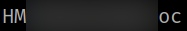
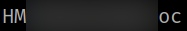

4.2 Get the first flag
1. You're logged as “hania”.
2. Run the following command on the Reverse Shell.
hania@bounty:~$ cat user.txt
Output:

1. You're logged as “hania”.
2. Run the following command on the Reverse Shell.
hania@bounty:~$ cat user.txt
Output:
